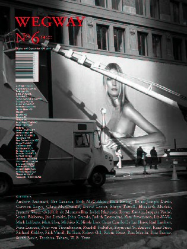

Wegway Primary Culture — Magazine
Wegway 6

Issue 6 of Wegway, the magazine of artists' projects, includes essays, art, interviews, and selections from the winners of the 2nd annual international juried exhibition.
Cover by Matt Siber, contestant in Wegway's Juried Art Exhibition, August 2003. Distributed across Canada and the U.S.A.
Contributors
Andrew Szatmari, Ber Lazarus, Beth McCubbin, Blair Ewing, Brian Joseph Davis, Cartoon Logic, Chris MacDonald, David Lester, Ehryn Torrell, Elizabeth Mackie, Frances Ward, Gabrielle de Montmollin, Isabel Martinez, Istvan Kantor, Jacques Vaché, Jeremi Bialowas, Jess Dobkin, John Grande, Judith Donoahue, Kim Simonsson, Liz-N-Val, Mark Laliberte, Matt Siber, Michiko K, Nicole Liao, Oscar Camilo De Las Flores, Paul Lambert, Peter Lamont, Peter von Tiesenhausen, Randall Stoltzfus, Raymond St. Arnaud, René Price, Richard Kirkley, Rick Vincil, Ri Tian, Robert Gill, Robin Hesse, Ron Martin, Ross Racine, Susan Bozic, Teruhisa Tahara, and W.B. Yeats.